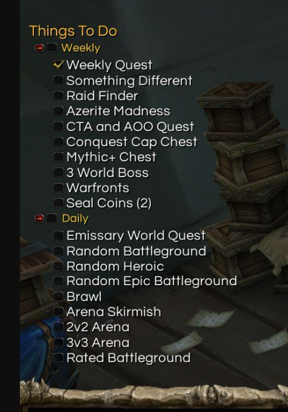

January 8th, 2022
Game designers have utilized the game play loop to master the art of educating players how to learn intricate mechanics in a fun engaging way for hundreds of years...
Read MoreJanuary 15th, 2022
It's amazing how much time I've invested into a world that has no real tangible gains irl. For as much time as I've spent shooting frost bolts, I can barely throw a snowball. How did World of Warcraft train me to master something in their game, I can barely do in real life? And why do I let them?
Read MoreJanuary 17th, 2022
Like any other day I woke up around 6a, ready to lay in bed till 9a. This isn't a habit I've been proud of, i've just had so much going on in my life it's been a comfortable bit of solace. The thing is, I usually end up feeling bad about or regretting it during the day. It's said the ADHD mind like the pressure of a time crunch, or that anxity ( I'm sure there's another phrasing ) to get that dopeamin feed to pushes you. But I hate relying on that. Honestly, I don't like relying on anything cause that means without it your hobbled. But today, as I get into my comfortable groove of sitting, playing games on my tablet and watching tv, I had an uncomfortable thought... What If I just... didn't?
Read More